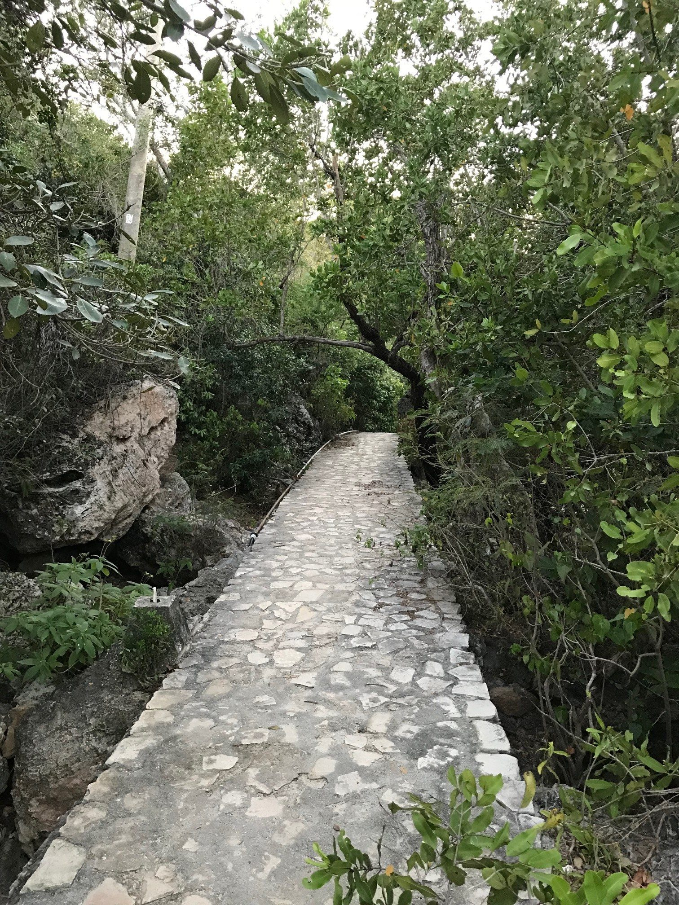
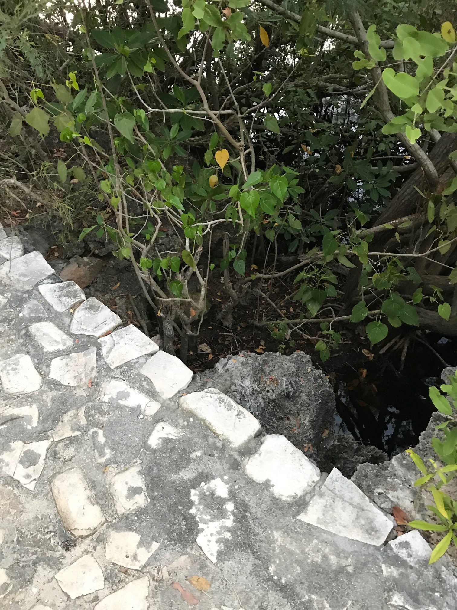
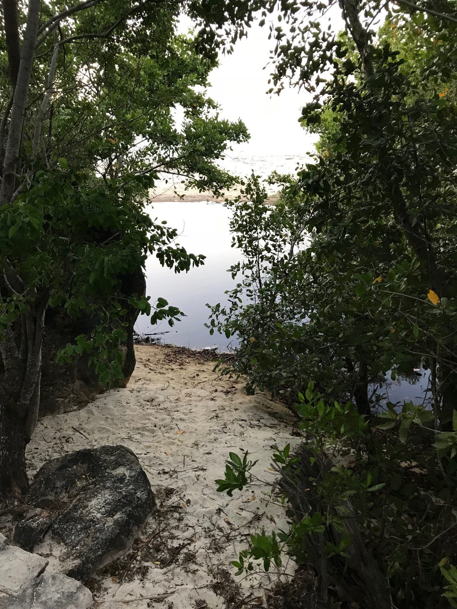
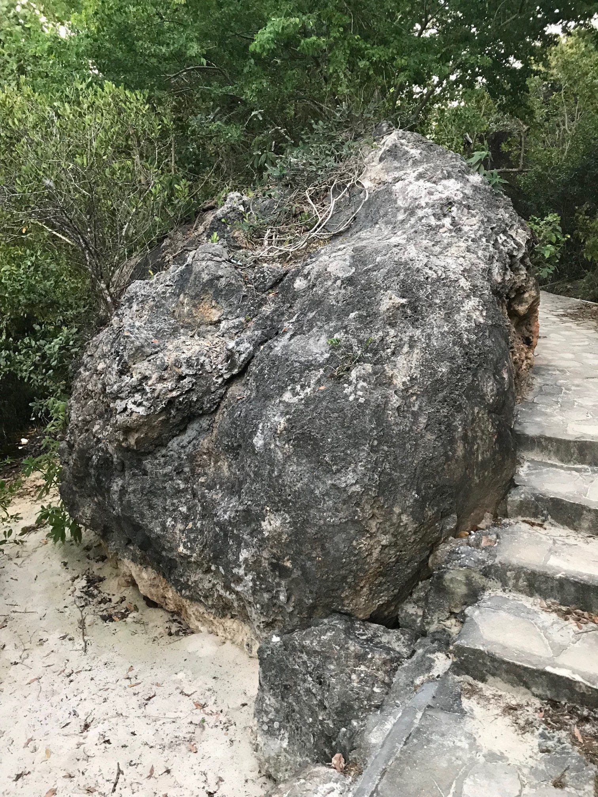
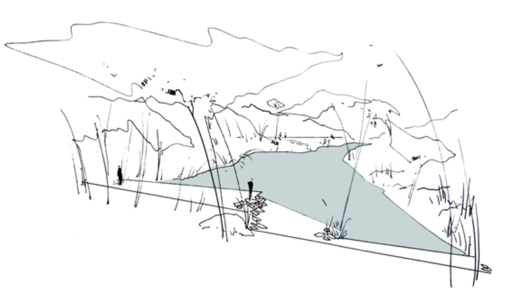
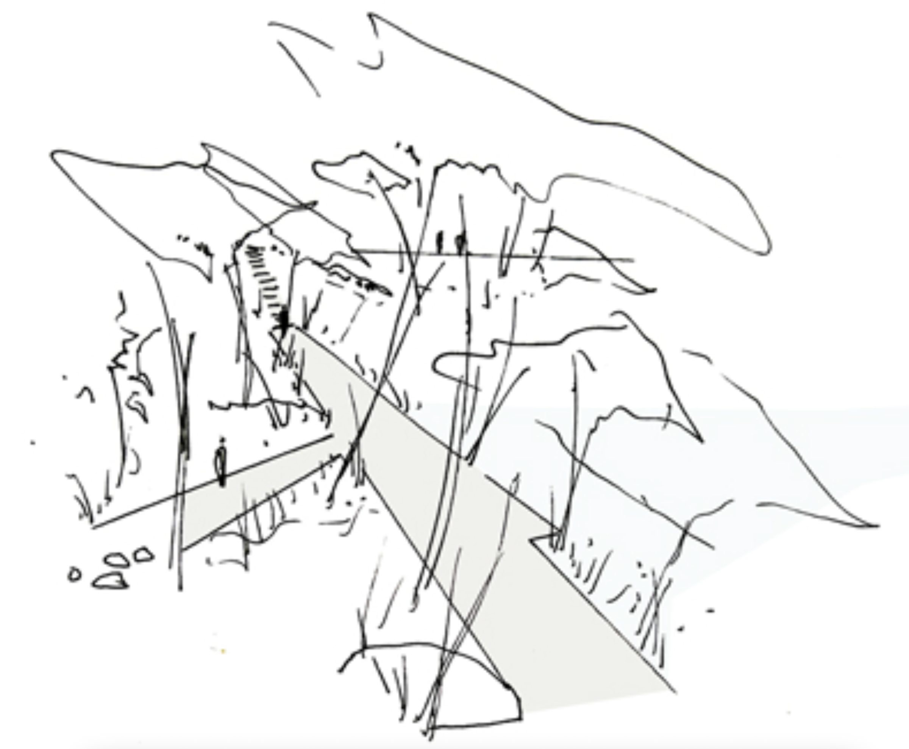

Commande
Cette promenade s'inscrit dans un site naturel — paysage de roches, d'eau et de végétation littorale halophile. Traversée par une rivière qui rencontre les flux de marée, elle est devenue plus qu'un chemin reliant deux points.
La promenade devient une expérience de traversée : entre terre et eau, entre village et mer, entre le cultivé et le sauvage. Chaque séquence révèle une qualité spécifique du paysage — une vue, une texture, un changement de lumière.
La végétation halophile existante a été respectée et complétée par des espèces côtières adaptées, renforçant l'identité du site plutôt que de l'effacer. La promenade se fond dans son environnement.





